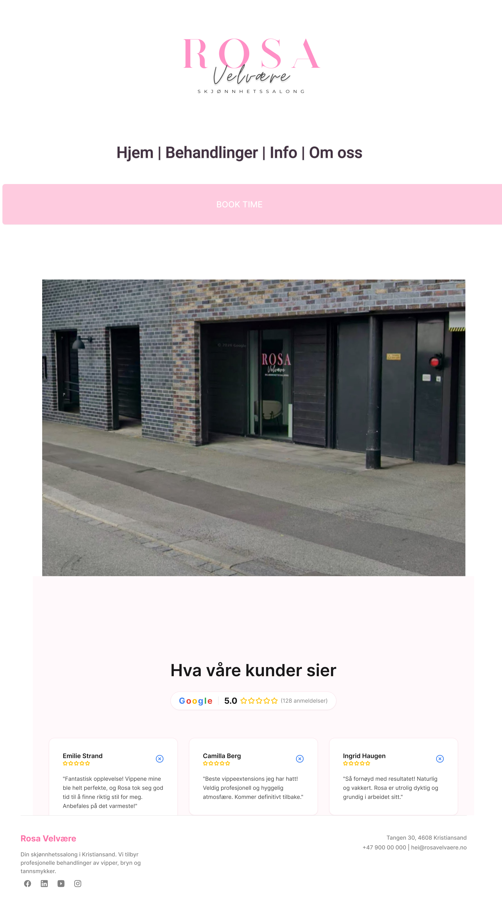
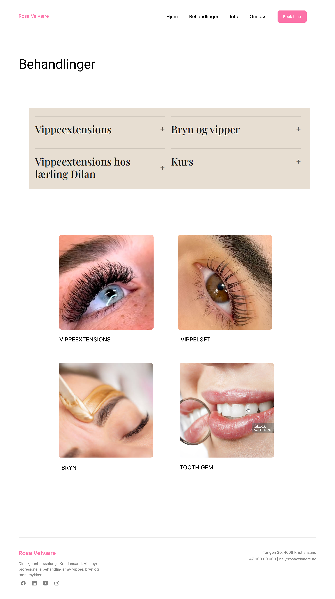

Praksis hos Rosa Velvære AS
Status 1
Her viser vi hva vi har jobbet med i den første delen av praksisperioden, og hvordan arbeidet med den nye nettsiden har utviklet seg så langt.
Bedriften
Video fra Rosa Velvære
I videoen forteller vi litt om Rosa Velvære AS, bransjen bedriften jobber i, arbeidsoppgavene våre og utfordringer prosjektet kan by på.
Arbeidet så langt
Behov-kartlegging og arbeid med skisser
I starten av praksisperioden har vi brukt tid på å bli kjent med Rosa Velvære og få en bedre forståelse av hva bedriften trenger fra en ny nettside. Vi har snakket om målgruppe, behandlinger, kurs, booking og hvilket uttrykk nettsiden bør ha. Dette har gitt oss et bedre grunnlag for å planlegge innholdet og strukturen på siden.
Vi begynte å lage skisser i Figma. Målet vårt med skissene er å finne en enkel og oversiktlig løsning før vi starter med selve utviklingen. Vi har blant annet sett på hvordan forsiden kan bygges opp, hvordan behandlingene kan presenteres, og hvordan brukeren enkelt kan finne frem til booking og kontaktinformasjon. Hovedformålet er jo å skape et godt inntrykk av bedriften,for potensielle kunder.
Figma
Skisser av nettsiden
Skissene under viser noen av ideene vi har jobbet med. De er foreløpige og vil bli videreutviklet etter tilbakemeldinger fra bedriften.

